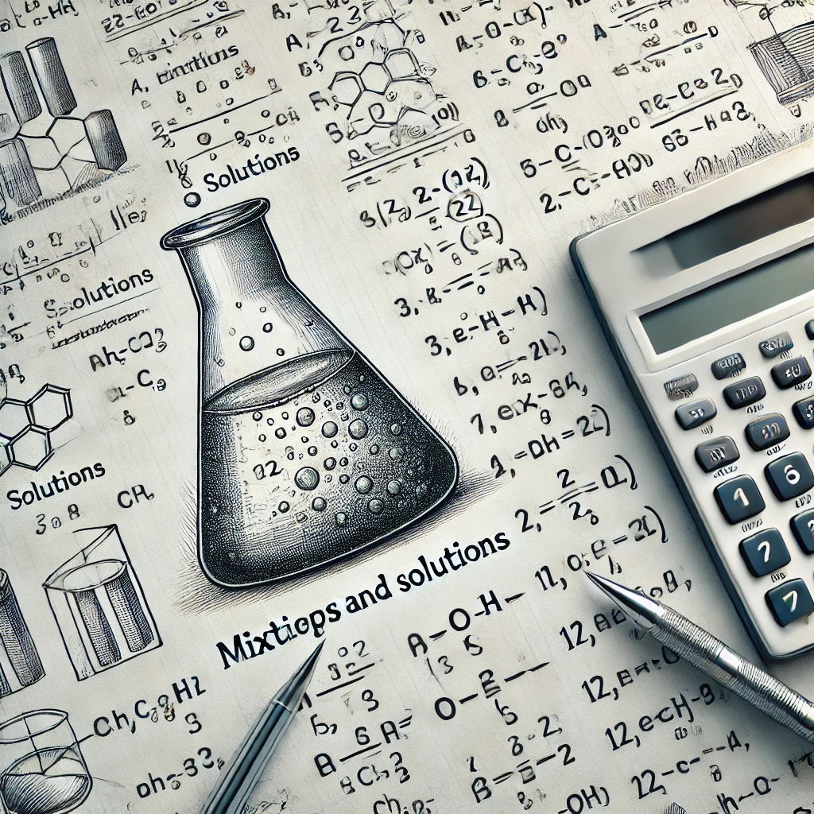

Решите задачи и проверьте себя!
Задача 1: Сколько граммов соли нужно добавить к 500 г 10%-ного раствора, чтобы получить 20%-ный раствор?
Решение: Пусть x - масса соли. Тогда (50 + x) / (500 + x) = 0.2. Решая уравнение, получаем x = 62.5 г.
Задача 2: В 600 г 15%-ного раствора добавили 200 г 30%-ного раствора. Найдите массовую долю вещества.
Решение: Найдем массу вещества в каждом растворе: 600 * 0.15 + 200 * 0.3 = 90 + 60 = 150 г. Общая масса раствора: 600 + 200 = 800 г. Массовая доля: 150/800 = 18.75%.
Задача 3: К 500 г 10%-ного раствора добавили 100 г чистого вещества. Какова массовая доля вещества в новом растворе?
Решение: Масса вещества в исходном растворе: 500 * 0.1 = 50 г. После добавления 100 г вещества, новая масса раствора 500 + 100 = 600 г. Массовая доля: (50 + 100) / 600 = 25%.